Create a project, or drop an exported tab to load
Tab info
My Project – Composer
Guitar tab – 4/4 – 120 BPM
Measure 1, Beat 1/1

The following fields are relative to the cursor
Dynamics
pp
p
mp
mf
f
ff
Chords
Sections
Lyric syllabe
Tempo update
Time signature
Moving cursor
↑
←
↓
→
or
z
q
s
d
Use control to move faster (left and right)
Modifiers
h
Hammer-on
p
Pull-off
b
Bend
x
Muffled
v
Vibrato
/
Ascending slide
\
Descending slide
GuiTab – Version 0.1.5
Arthur Beaulieu – 2020
Tab sections
Create a section using the controls on the left. Use the paste icon to paste the section to the cursors measure. It will erase any symbols on the process.
Playback controller